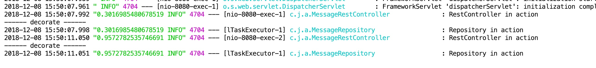

这主要涉及父子线程传值的问题，以及当配置@Async应用线程池时，如果得到MDC数据。参考原文
这篇博文主要展示如何从web线程里复制MDC数据到@Async注解的线程里，我们将会使用一个全新的 Spring Framework 4.3的特性: ThreadPoolTaskExecutor#setTaskDecorator() [set-task-decorator]. 如下图：

注意到倒数第一行和第三行：在这个log级别上输出了[随机数]，倒数第三行是在一个web线程里发出的，倒数第一行是在一个用了@Async注解的异步线程里发出的。本质上，MDC数据从web线程中复制到了使用@Async注解的异步线程里中了。想参考原文中的代码，可以前往github。
一. 代码示例
这个例子基于Spring Boot 2。日志API这里用的是SLF4J和Logback（用了Logger, LoggerFactory和MDC）。
1 pom.xml
<dependencies>
<dependency>
<groupId>org.springframework.boot</groupId>
<artifactId>spring-boot-starter-web</artifactId>
</dependency>
<dependency>
<groupId>org.springframework.boot</groupId>
<artifactId>spring-boot-starter-test</artifactId>
<scope>test</scope>
</dependency>
</dependencies>
2 application.properties
logging.pattern.level: "%X{mdcData}%5p"3 MessageRestController
@RestController
public class MessageRestController {
private final Logger logger = LoggerFactory.getLogger(getClass());
@Autowired
private MessageRepository messageRepository;
@GetMapping
public List<String> list() throws Exception {
logger.info("RestController in action");
// 调用异步方法
return messageRepository.findAll().get();
}
}4 MessageRepository
@Repository
public class MessageRepository {
private final Logger logger = LoggerFactory.getLogger(getClass());
@Async
Future<List<String>> findAll() {
logger.info("Repository in action");
// System.out.println(MDC.get("mdcData"));
return new AsyncResult<>(Arrays.asList("Hello World", "Spring Boot is awesome"));
}
}5 往web线程里设置MDC数据
@Component
public class MdcFilter extends GenericFilterBean {
@Override
public void doFilter(ServletRequest request, ServletResponse response, FilterChain chain)
throws IOException, ServletException {
try {
MDC.put("mdcData", "[userId:Duke]");
chain.doFilter(request, response);
} finally {
MDC.clear();
}
}
}到此，我们可以在web线程里很轻松的拿到正确配置的MDC数据，但是当一个web请求进入了@Async注解的异步方法调用里，我们却不能跟踪它，MDC数据里的ThreadLocal数据不会简单的自动复制过来。
二. 解决方案
1 配置@Async线程池
@EnableAsync(proxyTargetClass = true)
@SpringBootApplication
public class AsyncTaskdecoratorApplication extends AsyncConfigurerSupport {
@Override
public Executor getAsyncExecutor() {
ThreadPoolTaskExecutor executor = new ThreadPoolTaskExecutor();
executor.setTaskDecorator(new MdcTaskDecorator());
executor.initialize();
return executor;
}
public static void main(String[] args) {
SpringApplication.run(AsyncTaskdecoratorApplication.class, args);
}
}继承AsyncConfigurerSupport，我们可以自定义线程池，秘密在于executor.setTaskDecorator(new MdcTaskDecorator())，就是这行代码使我们可以自定义TaskDecorator。
2 实现TaskDecorator
public class MdcTaskDecorator implements TaskDecorator {
@Override
public Runnable decorate(Runnable runnable) {
try {
// Right now: Web thread context !
// Grab the current thread MDC data
Map<String, String> copyOfContextMap = MDC.getCopyOfContextMap();
return () -> {
// Right now: @Async thread context !
// Restore the Web thread context's MDC data
System.out.println("------ decorate ------ ");
MDC.setContextMap(copyOfContextMap);
runnable.run();
};
} finally {
MDC.clear();
}
}
}decorate()方法的参数是一个Runnable对象，返回结果也是另一个Runnable对象,这里，只是把原始的Runnable对象包装了一下，首先取得MDC数据，然后把它放到了委托的run方法里.
到此，MDC的数据就可以在@Async线程里面获取到了。
总结
从web线程里复制MDC数据到异步线程是如此的容易，这里展示的技巧不局限于复制MDC数据，你也可以使用它来复制其他ThreadLocal数据（MDC内部就是使用ThreadLocal），或者你可以使用TaskDecorator做一些其他完全不同的事情：记录日志，度量方法执行的时间，吞掉异常，退出JVM等。
参考：
- 使用ThreadLocal，不会在子线程中（包括new Thread和new线程池）获取到.
- 使用InheritableThreadLocal，可以在子线程中（包括new Thread和new线程池）获取到，但是如果用的是线程池，一般不会每次使用的时候重新创建，而他的赋值只能在首次创建的时候可以（Thread类的inheritableThreadLocals变量），后面线程池中的线程重复使用时，一开始赋值的那个变量将会一直存在.
- 在spring中，一般通过xml或者@Configuration来配置线程池，那么在项目启动的时候，线程池就完成创建了，根本没有机会给你设置变量，所以最佳实践就是，在线程池提交任务的时候（execute和submit方法），把当前线程的threadlocal变量保存起来，重写run方法或者call方法，并且在调用实际的run方法前，保存刚才保存起来的变量，一般也是放到threadlocal里面，这样在实际的run方法里，就可以方便的通过threadlocal获取到了。
- 实现原理如上述3所说，这篇翻译的文章中也是该原理，ali提供了一个transmittable-thread-local，原理也是上面3所讲的。
- 值得说明的一下是，也可以参考Spring Cloud Sleuth的实践，Spring Cloud Sleuth为Spring Cloud实施分布式跟踪解决方案.